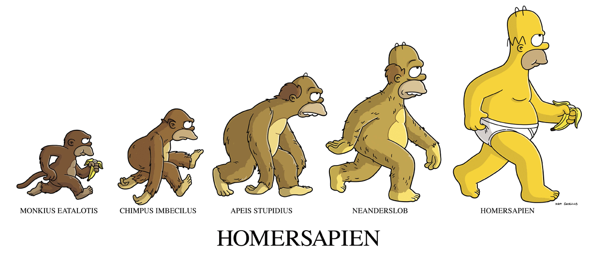
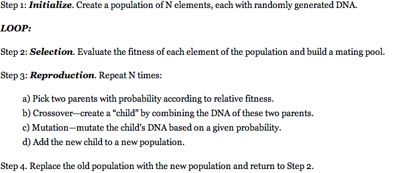
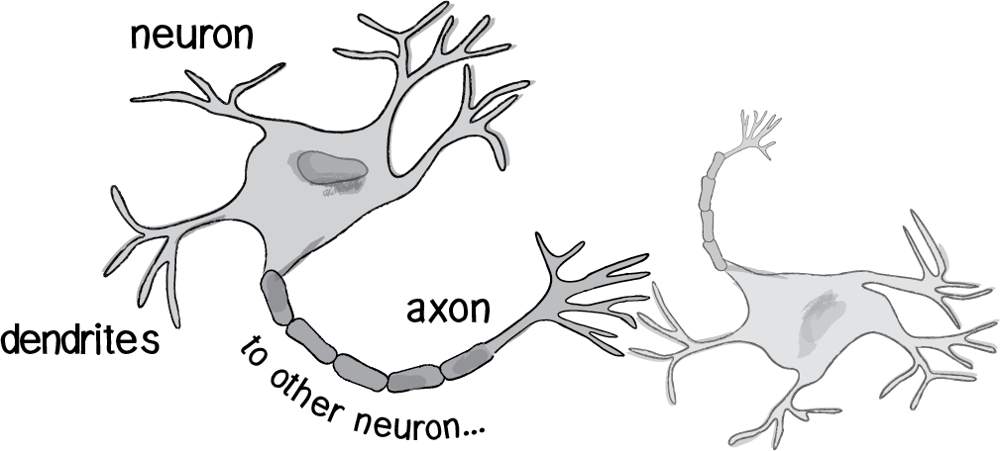
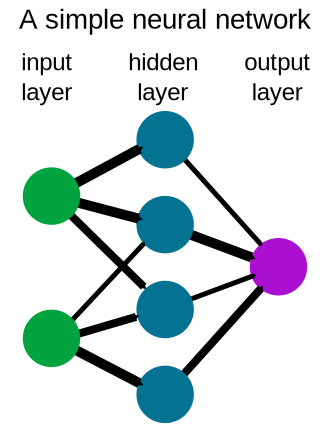
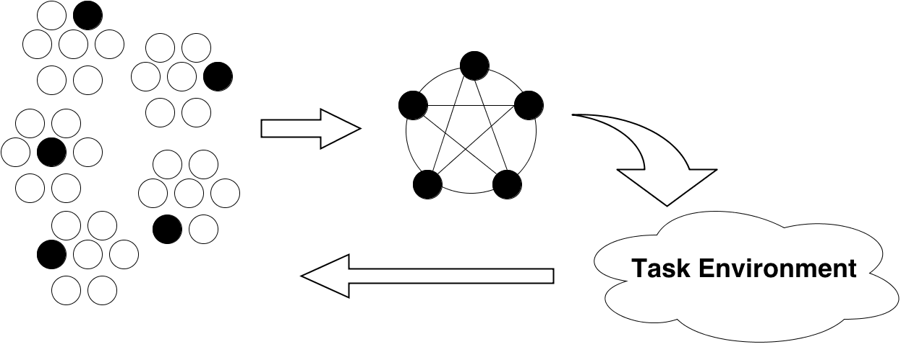

Accelerated Neuroevolution on Core Architectures
Edmore Moyo
Supervisors : Michelle Kuttel / Geoff Nitschke
28 May 2013
Neuro evolution
Evolution ...
... is the change in the inherited characteristics of biological populations over successive generations.
~ Wikipedia
Genetic Algorithms
In the computer science field of artificial intelligence, a genetic algorithm (GA) is a search heuristic that mimics the process of natural evolution.
~ Wikipedia
Genetic Algorithm
Neuro evolution
Biological Neural Networks
The human brain can be described as a biological neural network, as it is an interconnected web of neurons.
Artificial Neural Networks
Artificial neural networks are based on the parallel architecture of animal brains and are used for modeling complex relationships between inputs and outputs or to find patterns in data.
Perceptrons
The simplest neural network possible is a computational model of a single neuron called a perceptron.
A perceptron can only solve linearly seperable problems e.g. cannot solve XOR.
Multi-layered Perceptrons
A multi-layered perceptron is a network of perceptrons.

It can learn to solve more complicated problems
The key element of Neural Networks ?
They have the ability to learn
Classes of Learning Systems
Supervised Learning
UnSupervised Learning
Reinforcement Learning
Reinforcement Learning Systems
Reinforcement learning is learning what to do--how to map situations to actions--so as to maximize a numerical reward signal.
Neuroevolution
Neuroevolution (NE) is a method for modifying neural network weights, topologies, or ensembles, with a genetic algorithm, in order for the network to learn a specific task
~ Risto Miikkulainen
NE is an evolutionary reinforcement learning system.
Examples of NE methods
Symbiotic Adaptive Neuroevolution (SANE)
Enforced Sub-populations (ESP)
Neuroevolution Augmenting Topologies (NEAT)
Potter and De Jong
Multi-Component ESP
... and many more
Examples of population based NE methods
Symbiotic Adaptive Neuroevolution (SANE)
Enforced Sub-populations (ESP)
Potter and De Jong
Enforced Sub-populations (ESP)
Core Architectures
Parallelism
Concurrency
Parallelism
Multi-core
Many-core
Multi-core
Many-core
Concurrency

What do we already know?
How will this study contribute?
Aims
Research Questions
Approach
Testing and Evaluation
Milestones
References
- http://www.ironammonite.com/2011/05/top-5-evolution-in-minute-videos-on-tv_19.html
- http://natureofcode.com/book/
- http://www.nextnature.net/2010/01/as-smart-as-mice/
- http://webdocs.cs.ualberta.ca/~sutton/book/ebook/node7.html
- http://en.wikipedia.org/wiki/File:Neural_network_example.svg
- http://www.cs.utexas.edu/users/nn/pages/research/neuroevolution.html
- http://tip.golang.org/doc/gopher/